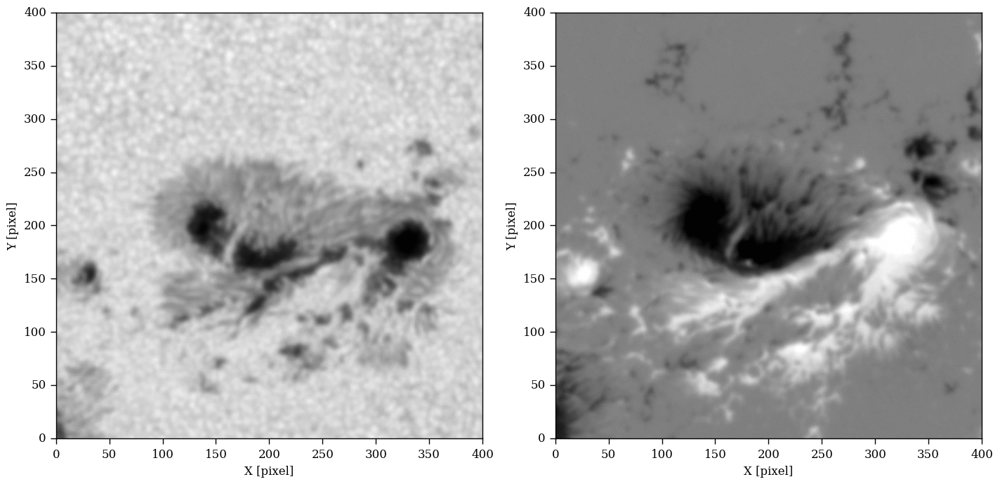

---
redirect_from:
  - "/03/enhancing-sdo-images"
title: |-
  Enhancing SDO Images
pagenum: 8
prev_page:
  url: /02/1/notebook.html
next_page:
  url: /03/1/notebook.html
suffix: .md
search: images baso asensio ramos deep developed solar python software keras github enhance aa pdf example c j diaz chapter learn apply learning tecniques improve resolution our fast robust fully convolutional neural network deconvolves super resolves continuum magnetograms observed helioseismic magnetic imager hmi satellite improvement allow us analyze smallest scale events atmosphere want note although almost examples written omitted materials original format usually large fits files avoid increasing size notebook resulting project library io hosted com cdiazbas published daz astronomy astrophysics www aanda org articles docs imagen gif applied real

comment: "***PROGRAMMATICALLY GENERATED, DO NOT EDIT. SEE ORIGINAL FILES IN /content***"
---

    <main class="jupyter-page">
    <div id="page-info"><div id="page-title">Enhancing SDO Images</div>
</div>
    
<div class="jb_cell">

<div class="cell border-box-sizing text_cell rendered"><div class="inner_cell">
<div class="text_cell_render border-box-sizing rendered_html">
<p><em>by C. J. Diaz Baso and A. Asensio Ramos</em></p>
<p>In this chapter we will learn how to use and apply deep learning tecniques to improve the resolution of our images in a fast and robust way. We have developed a deep fully convolutional neural network which deconvolves and super-resolves continuum images and magnetograms observed with the Helioseismic and Magnetic Imager (HMI) satellite. This improvement allow us to analyze the smallest-scale events in the solar atmosphere.</p>
<p>We want to note that although almost all the examples/images are written in python, we have omitted some materials in their original format (usually large FITS files) to avoid increasing the size of this notebook.</p>
<p>The software resulting from this project, which was developed with the python library <a href="https://keras.io/">keras</a>, is hosted on <a href="https://github.com/cdiazbas/enhance">Github</a> and published in <a href="https://www.aanda.org/articles/aa/pdf/2018/06/aa31344-17.pdf">Díaz Baso &amp; Asensio Ramos, 2018, <i> Astronomy & Astrophysics</i>, 614, A5</a>.</p>
<p>
Example of the software <code>Enhance</code> applied to real solar images.</p>

</div>
</div>
</div>
</div>

 


    </main>
    